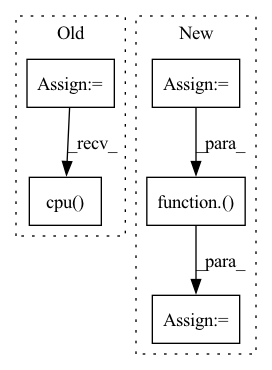

Pattern ID :33133

Before Change
for i in range(val_loader.size):
images, gt, name, _ = val_loader.load_data()
gt = np.asarray(gt, np.float32)
images = images.numpy()
imageTensor = Tensor(images)
imageTensor.to_device(device_id)
out = model.infer(imageTensor)
out = out[0]
out.to_host()
res = torch.from_numpy(np.array(out))
res = F.upsample(res, size=gt.shape, mode="bilinear", align_corners=False)
res = res.sigmoid().data.cpu().numpy().squeeze()
res = (res - res.min()) / (res.max() - res.min() + 1e-8)
print("--> save results: {}".format(SAVE_PATH+name))
imageio.imwrite(SAVE_PATH+name, res)
After Change
// save results
res = mindspore.Tensor(res)
res = mindspore.ops.Sigmoid()(res)
res = mindspore.nn.ResizeBilinear()(res, (h, w))
res = (res - res.min()) / (res.max() - res.min() + 1e-8)
res = res.asnumpy().squeeze()
imageio.imwrite(save_path+img_name.replace(".jpg", ".png"), res)
In pattern: SUPERPATTERN
Frequency: 3
Non-data size: 5
Instances
Fragment ID: 95793524
Project Name: gewelsji/dgnet
Commit Name: f82c53433a67c0ed8d98385254a023d800a1335c
Time: 2022-11-18
Author: gepengai.ji@gmail.com
File Name: lib_ascend/inference_om.py
M Class Name: AnonimousClass
N Class Name: AnonimousClass
M Method Name: infer(4)
N Method Name: infer(3)
M Parent Class:
N Parent Class:
M File Name: lib_ascend/inference_om.py
N File Name: lib_ascend/inference_om.py
M Start Line: 41
M End Line: 63
N Start Line: 45
N End Line: 86
'>
Before Change
reservoir.forward = self.eprop._decorate_hidden_forward(reservoir.forward, reservoir.name)
output_layer.forward = self.eprop._decorate_forward(output_layer.forward, output_layer.name)
for _ in progress_bar:
x_pred = []
x_pred.append(self.true_time_series[:, 0, :].clone())
forward_tensor = self.true_time_series[:, 0, :].clone().to(reservoir.device)
hh = None
for t in range(1, self.true_time_series.shape[-2]):
forward_tensor, hh = unpack_out_hh(reservoir(forward_tensor, hh, t=t-1))
forward_tensor, _ = unpack_out_hh(output_layer(forward_tensor, None, t=t-1))
x_pred.append(forward_tensor)
// eligibility_traces = dy_dw_local(y=forward_tensor, params=self.params)
// self.eprop.eligibility_traces = eligibility_traces
// batch_loss = self.eprop.apply_criterion(forward_tensor, self.true_time_series[:, t].to(forward_tensor.device))
// learning_signals = self.compute_learning_signals(loss_at_t)
// errors = self.eprop.compute_errors(forward_tensor, self.true_time_series[:, t])
// learning_signals = self.eprop.compute_learning_signals(errors)
// self.eprop.update_grads(errors, batch_loss)
forward_tensor.detach_()
hh = recursive_detach(hh)
// if t % self.update_each == 0:
// self.eprop._make_optim_step()
self.eprop._make_optim_step()
x_pred = torch.stack([t.cpu() for t in x_pred], dim=1)
pvar = PVarianceLoss()(x_pred, self.true_time_series.to(x_pred.device))
mse = torch.nn.MSELoss()(x_pred, self.true_time_series.to(x_pred.device))
progress_bar.set_postfix({"pvar": to_numpy(pvar).item(), "MSE": to_numpy(mse).item()})
After Change
mse_func = torch.nn.MSELoss()
// self.eprop.optimizer.zero_grad()
self.model = SequentialRNN(
layers=[reservoir, output_layer],
foresight_time_steps=self.true_time_series.shape[-2],
out_memory_size=self.true_time_series.shape[-2],
device=reservoir.device
).build()
self.eprop.start(self)
for _ in progress_bar:
self.eprop.on_train_begin(self)
self.eprop.on_batch_begin(self)
inputs = self.true_time_series[:, 0, :].clone().unsqueeze(1).to(self.model.device)
x_pred = self.model.get_prediction_trace(inputs)
self.current_training_state = self.current_training_state.update(pred_batch=x_pred)
self.eprop.on_batch_end(self)
self.eprop.on_train_end(self)
pvar = PVarianceLoss()(x_pred, self.true_time_series.to(x_pred.device))
mse = torch.nn.MSELoss()(x_pred, self.true_time_series.to(x_pred.device))
progress_bar.set_postfix({"pvar": to_numpy(pvar).item(), "MSE": to_numpy(mse).item()})
pvars.append(to_numpy(pvar).item())
mses.append(to_numpy(mse).item())
val_pvars = []
inputs = self.raw_time_series[:, 0, :].clone().unsqueeze(1).to(self.model.device)
for _ in range(100):
val_x_pred = self.model.get_prediction_trace(inputs)
pvar = PVarianceLoss()(val_x_pred, self.raw_time_series.to(val_x_pred.device))
val_pvars.append(to_numpy(pvar).item())
print(f"Validation PVariance: {np.mean(val_pvars):.3f}")
return x_pred, self.raw_time_series
'>
Fragment ID: 95793505
Project Name: neurotorch/neurotorch
Commit Name: da8d4065502c761ccf6e28e47dd189e3b5488140
Time: 2023-01-31
Author: 50332514+JeremieGince@users.noreply.github.com
File Name: src/neurotorch/learning_algorithms/debug_e_prop_v5.py
M Class Name: SimplifiedEpropFinal
N Class Name: SimplifiedEpropFinal
M Method Name: train(4)
N Method Name: train(4)
M Parent Class:
N Parent Class:
M File Name: src/neurotorch/learning_algorithms/debug_e_prop_v5.py
N File Name: src/neurotorch/learning_algorithms/debug_e_prop_v5.py
M Start Line: 120
M End Line: 153
N Start Line: 115
N End Line: 144
'>
Before Change
if type(obs) != torch.tensor:
obs = torch.FloatTensor(np.array([obs])).to(util.device)
action_info = self.policy_network.sample(obs)
action = action_info["action_scaled"]
log_prob = action_info.get("log_prob", 1)
return {
"action": action.cpu().numpy()[0],
"log_prob": log_prob[0]
}
After Change
def select_action(self, obs, deterministic=False):
if len(obs.shape) == 1:
ret_single = True
obs = [obs]
if type(obs) != torch.tensor:
obs = torch.FloatTensor(np.array(obs)).to(util.device)
action = itemgetter("action_scaled")(self.policy_network.sample(obs))
log_prob = np.zeros([(action.shape[0]),])
if ret_single:
action = action[0]
log_prob = log_prob[0]
return {
"action": action.detach().cpu().numpy(),
"log_prob" : log_prob
'>
Fragment ID: 95793535
Project Name: x35f/unstable_baselines
Commit Name: fd650918d0f96ab53625afed362025e5a53c10a6
Time: 2022-06-13
Author: 1621322691@qq.com
File Name: unstable_baselines/baselines/td3/agent.py
M Class Name: TD3Agent
N Class Name: TD3Agent
M Method Name: select_action(3)
N Method Name: select_action(3)
M Parent Class: BaseAgent,torch.nn.Module
N Parent Class: BaseAgent,torch.nn.Module
M File Name: unstable_baselines/baselines/td3/agent.py
N File Name: unstable_baselines/baselines/td3/agent.py
M Start Line: 150
M End Line: 158
N Start Line: 142
N End Line: 155